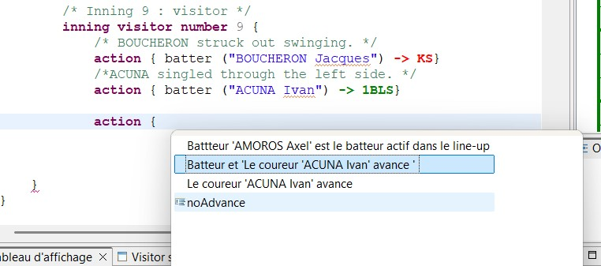

At any time, the user can request a list of valid elements for the current cursor position by using the shortcut Ctrl+Space. Selecting from this list instead of typing everything out speeds up data entry and helps avoid syntax errors.
In the example above, you can select ‘Add a new action,’ and the result will be as follows.

The tool’s auto-completion feature does more than just list all possible words: the suggestions are linked to what has already been entered and to the state of the match. The tool only proposes options that are actually possible at that specific point in the game.
For example, if the bases are empty, the tool does not suggest any actions involving a runner. Similarly, the players offered are those currently present in the active lineup. The following example describes the possible suggestions for the advancement of the batter and the runners.
